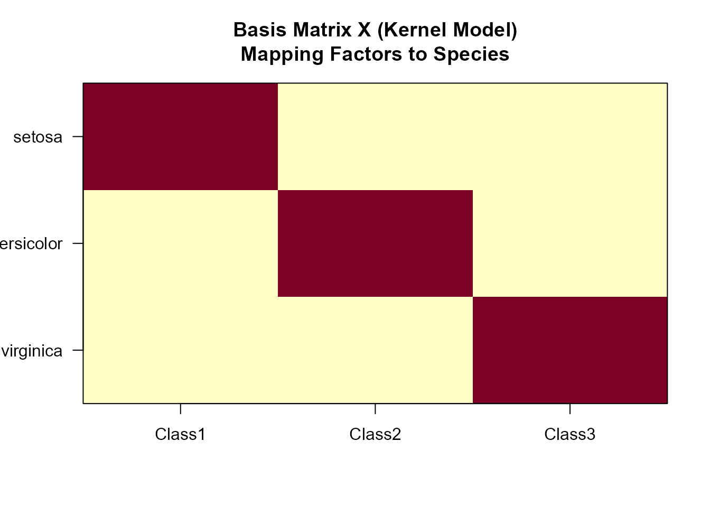
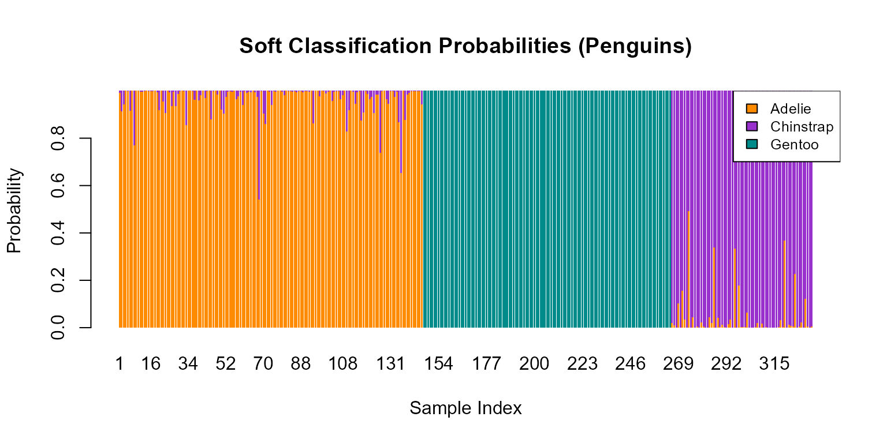

Classification with NMF-LAB
Source:vignettes/classification-with-nmfkc.Rmd
classification-with-nmfkc.RmdIntroduction
This vignette demonstrates how to use the nmfkc package
for Supervised Classification, a technique referred to
as NMF-LAB (Label-based NMF).
How it works
The NMF-LAB approach treats multi-class classification as a matrix factorization task:
- (Target): One-hot encoded matrix of class labels (Classes Samples).
- (Input): Feature matrix or Kernel matrix constructed from features.
- (Learned Basis): A mapping matrix between latent factors and class labels.
- (Coefficient/Parameter): Captures the relationship between input and classes.
Key Trade-off:
- Linear Model (): Highly interpretable. tells you exactly which feature contributes to which class.
- Kernel Model (): Highly accurate. Handles non-linear boundaries but is harder to interpret.
We will explore this trade-off using the iris
dataset.
First, let’s load the required packages.
library(nmfkc)
#> Package: nmfkc (Version 0.5.7 , released on 16 12 2025 )
#> https://ksatohds.github.io/nmfkc/
library(palmerpenguins)
#> Warning: package 'palmerpenguins' was built under R version 4.4.2Example 1: The Iris Dataset (Linear vs. Kernel)
Our goal is to classify 3 species of iris flowers (setosa, versicolor, virginica) based on 4 measurements.
1. Data Preparation
We convert the species labels into a binary class matrix and normalize the features .
# 1. Prepare Labels (Y)
label_iris <- iris$Species
Y_iris <- nmfkc.class(label_iris) # One-hot encoding (3 Classes x 150 Samples)
rank_iris <- length(unique(label_iris)) # Number of classes
# 2. Prepare Features (U)
# Normalize features to [0, 1] range and transpose to (Features x Samples)
U_iris <- t(nmfkc.normalize(iris[, -5]))Step 1: Linear NMF-LAB (Focus on Interpretability)
First, we fit a Linear Model by using the features directly as the input matrix . This allows us to see “Which feature drives which class?” by inspecting the matrix .
# Use Normalized Features directly as A
A_linear <- U_iris
# Fit Linear NMF-LAB
res_linear <- nmfkc(Y = Y_iris, A = A_linear, rank = rank_iris, seed = 123, prefix = "Class")
#> Y(3,150)~X(3,3)C(3,4)A(4,150)=XB(3,150)...0sec
# --- Interpretability Check ---
# The matrix C (Q x R) shows the weight of each Feature (columns) for each Class (rows).
# Let's look at the estimated weights:
round(res_linear$C, 2)
#> Sepal.Length Sepal.Width Petal.Length Petal.Width
#> Class1 0.00 0.87 0.00 0.00
#> Class2 0.03 0.00 0.57 0.00
#> Class3 0.01 0.00 0.08 0.78Interpretation: Looking at the matrix above:
-
Class1 (Setosa): Has high weights on
Sepal.Width(2nd col). -
Class3 (Virginica): Has high weights on
Petal.Length(3rd col) andPetal.Width(4th col). This “White-box” transparency is the main advantage of the linear model.
Accuracy Check: We evaluate the model using a confusion matrix. (Note: Linear models often struggle with overlapping classes like versicolor and virginica.)
pred_linear <- predict(res_linear, type = "class")
(f_linear <- table(fitted.label = pred_linear, label = label_iris))
#> label
#> fitted.label setosa versicolor virginica
#> setosa 50 0 0
#> virginica 0 50 50
# Calculate Accuracy (assuming diagonal correspondence)
acc_linear <- sum(diag(f_linear)) / sum(f_linear)
cat(paste0("Linear Model Accuracy: ", round(acc_linear * 100, 2), "%\n"))
#> Linear Model Accuracy: 66.67%Step 2: Kernel NMF-LAB (Focus on Performance)
To improve accuracy, we switch to the Kernel Model. We map the features into a high-dimensional space using a Gaussian kernel.
# 1. Optimize Kernel Width (beta)
# Heuristic estimation of beta
res_beta <- nmfkc.kernel.beta.nearest.med(U_iris)
# Cross-validation for fine-tuning (using generated candidates)
cv_res <- nmfkc.kernel.beta.cv(Y_iris, rank = rank_iris, U = U_iris,
beta = res_beta$beta_candidates, plot = FALSE)
#> beta=1.10348457794195...0.1sec
#> beta=11.0348457794195...0sec
#> beta=110.348457794195...0sec
#> beta=1103.48457794195...0sec
best_beta <- cv_res$beta
# 2. Fit Kernel NMF-LAB
A_kernel <- nmfkc.kernel(U_iris, beta = best_beta)
res_kernel <- nmfkc(Y = Y_iris, A = A_kernel, rank = rank_iris, seed = 123, prefix = "Class")
#> Y(3,150)~X(3,3)C(3,150)A(150,150)=XB(3,150)...0sec
# 3. Prediction and Evaluation
fitted_label <- predict(res_kernel, type = "class")
(f_kernel <- table(fitted.label = fitted_label, label = label_iris))
#> label
#> fitted.label setosa versicolor virginica
#> setosa 50 0 0
#> versicolor 0 49 4
#> virginica 0 1 46
# Calculate Accuracy
acc_kernel <- sum(diag(f_kernel)) / sum(f_kernel)
cat(paste0("Kernel Model Accuracy: ", round(acc_kernel * 100, 2), "%\n"))
#> Kernel Model Accuracy: 96.67%Result: The accuracy jumps significantly (often >96%). The kernel successfully separates the complex boundaries.
Visualization: Class Prototypes (Basis X)
Finally, let’s visualize the Basis Matrix of the successful kernel model. Ideally, it should look like a diagonal matrix, mapping each Latent Factor to a specific Species.
image(t(res_kernel$X)[, nrow(res_kernel$X):1],
main = "Basis Matrix X (Kernel Model)\nMapping Factors to Species",
axes = FALSE, col = hcl.colors(12, "YlOrRd", rev = TRUE))
axis(1, at = seq(0, 1, length.out = rank_iris), labels = colnames(res_kernel$X))
axis(2, at = seq(0, 1, length.out = rank_iris), labels = rev(rownames(res_kernel$X)), las = 2)
box()
Example 2: The Palmer Penguins Dataset
Let’s apply the Kernel NMF-LAB workflow to classify penguin species (Adelie, Chinstrap, Gentoo), focusing on the Probabilistic (Soft) nature of NMF classification.
1. Data Preparation
We must remove rows with missing values (NA) as the
kernel matrix
cannot handle missing entries in the input features.
# Load and clean data (remove rows with NAs)
d_penguins <- na.omit(palmerpenguins::penguins)
# Prepare Y (Labels)
label_penguins <- d_penguins$species
Y_penguins <- nmfkc.class(label_penguins)
# Prepare U (Features)
U_penguins <- t(nmfkc.normalize(d_penguins[, 3:6]))2. Model Fitting
We use the heuristic directly for a quick demonstration.
rank_penguins <- length(unique(label_penguins))
# 1. Heuristic beta estimation
best_beta_penguins <- nmfkc.kernel.beta.nearest.med(U_penguins)$beta
# 2. Optimization
A_penguins <- nmfkc.kernel(U_penguins, beta = best_beta_penguins)
res_penguins <- nmfkc(Y = Y_penguins, A = A_penguins, rank = rank_penguins,
seed = 123, prefix = "Class")
#> Y(3,333)~X(3,3)C(3,333)A(333,333)=XB(3,333)...0.2sec3. Visualizing “Soft” Classification
Unlike many classifiers that only output a final label, NMF provides a probability distribution over classes. The plot below shows the predicted probability for each penguin.
- Solid Blocks of Color: Indicate high confidence predictions.
- Mixed Colors: Indicate samples where the model is uncertain (often on the boundary between species).
# Get probabilistic predictions
probs <- predict(res_penguins, type = "prob")
# Visualize
barplot(probs, col = c("#FF8C00", "#9932CC", "#008B8B"), border = NA,
main = "Soft Classification Probabilities (Penguins)",
xlab = "Sample Index", ylab = "Probability")
legend("topright", legend = levels(label_penguins),
fill = c("#FF8C00", "#9932CC", "#008B8B"), bg = "white", cex = 0.8)
4. Evaluation
Finally, we calculate the accuracy.
fitted_label_p <- predict(res_penguins, type = "class")
(f_penguins <- table(Predicted = fitted_label_p, Actual = label_penguins))
#> Actual
#> Predicted Adelie Chinstrap Gentoo
#> Adelie 146 0 0
#> Chinstrap 0 68 0
#> Gentoo 0 0 119
acc_p <- sum(diag(f_penguins)) / sum(f_penguins)
cat(paste0("Penguins Accuracy: ", round(acc_p * 100, 2), "%\n"))
#> Penguins Accuracy: 100%} ```